No-kill animal shelters are those that don't eutanize healthy or treatable animals even when the shelter is full. Instead they prioritize fostering or adopting the animals.
Why you should 100% adopt from a no-kill animal shelter?
You choosing to adopt from this facility can convince others to as well, boosting adoption rates for a facility like this. Additionally, your choice can increase the public image of the shelter as well and make it better known. This can attract more volunteers and even increase staff morale. Overall, it can bring the community together for an organization that's goal is truly to help and not cause harm. Btw: adoption = more funding/income = more opportunities for the shelter to help!
Some cute pictures of doggos!
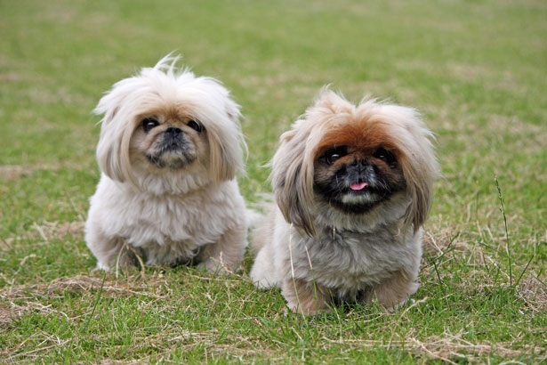
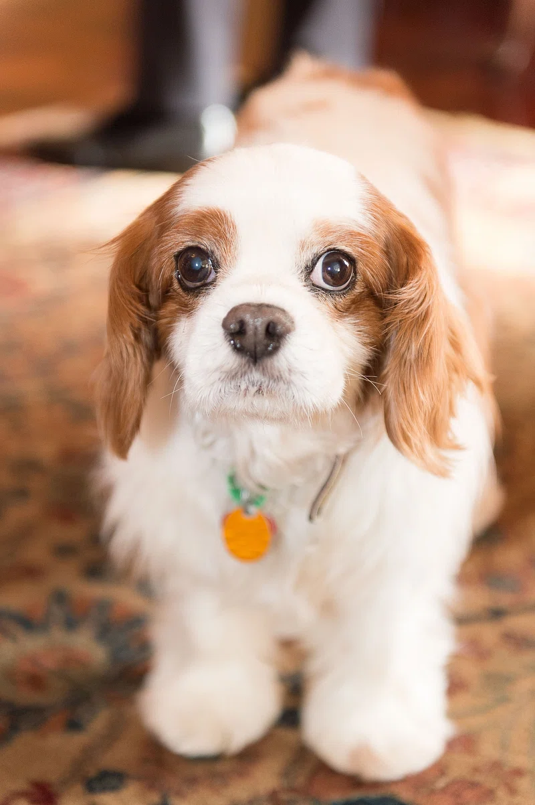
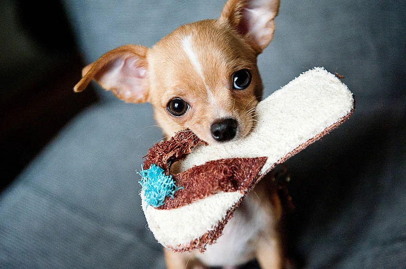
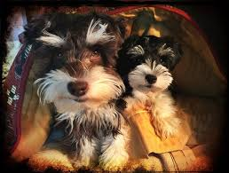
Dog & Kitty City - no-kill shelter
This is an animal shelter is a no-kill shelter in the DFW area near me. They're dedicated to giving the animals all the resources they need, loving them, and finding great families for them. They've been here for over 40 years and have helped countless animals!
Project Fluffy
This was a project I created to increase volunteering rates at Dog & Kitty City and raise awareness about no-kill shelters. I did this project in 2023-2024, and I created posters that were eye-catching, hosted several seminars on no-kill shelters, ran an event to raise funds for the shelter, and created engaging social media posts. With all the iniatives I did, I raised overal 100+ dollars and increased volunteering by 21% compared to the previous year. This was largely successful and it helped educate my community about these shelters :3!
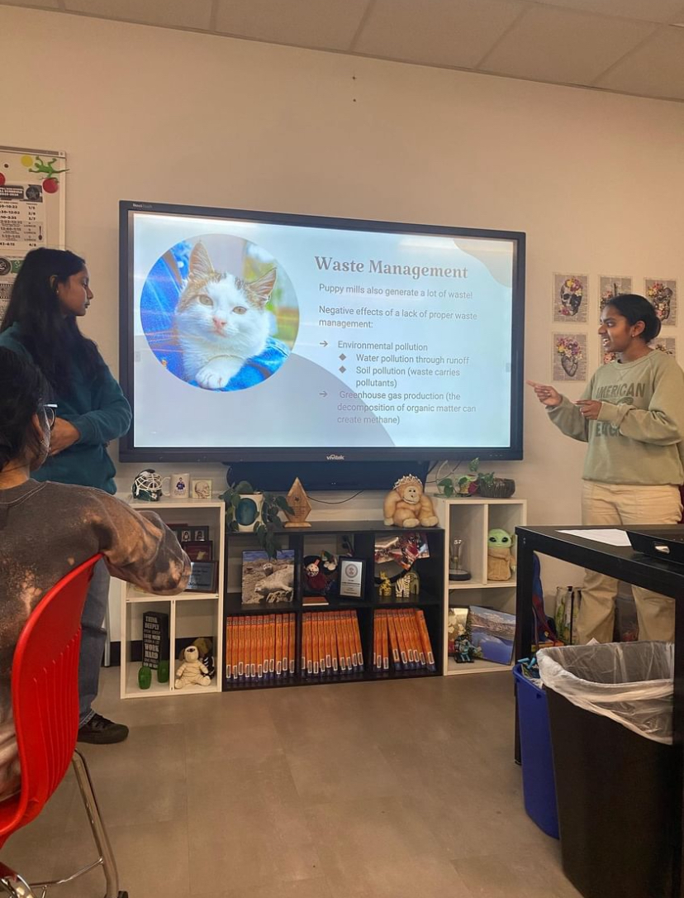
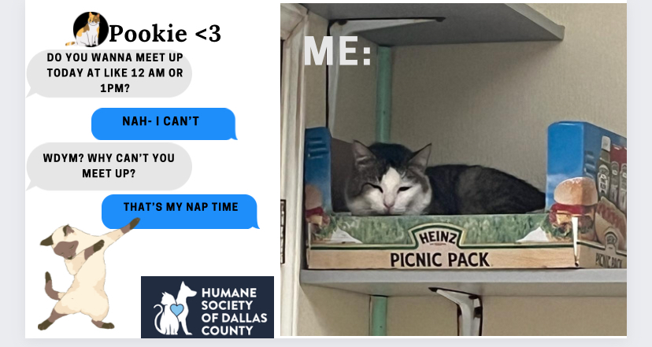
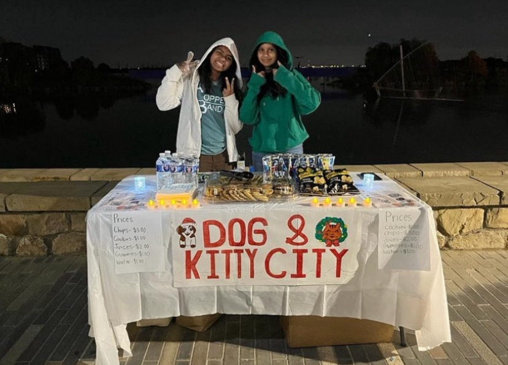
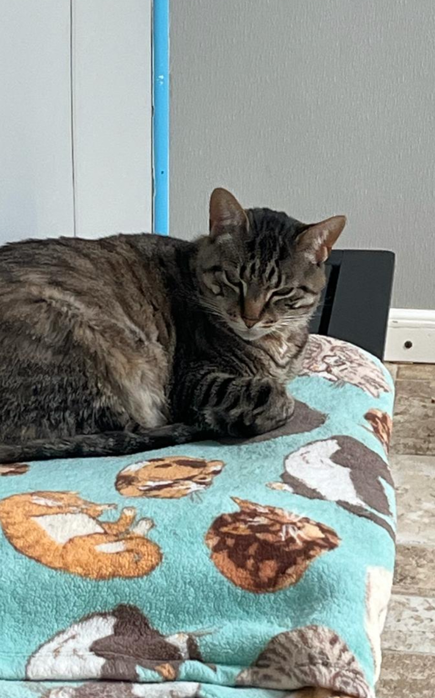
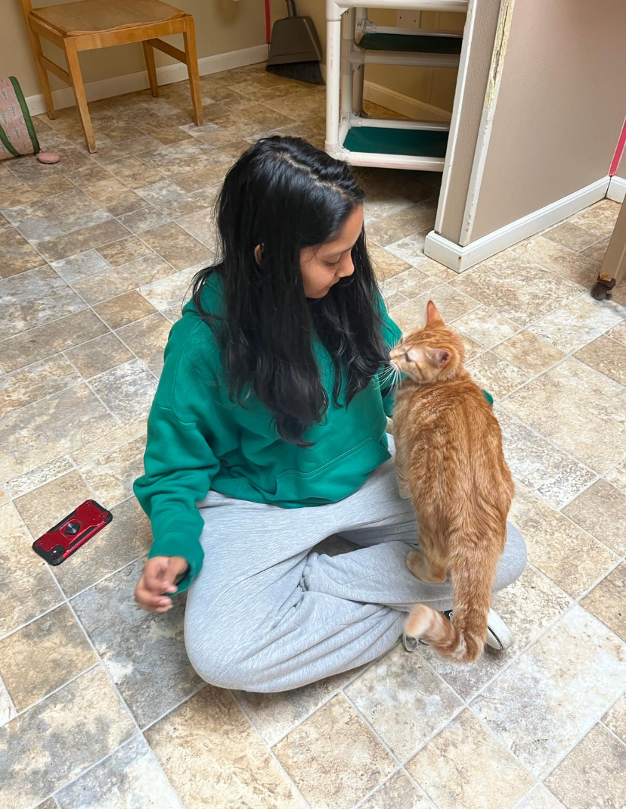
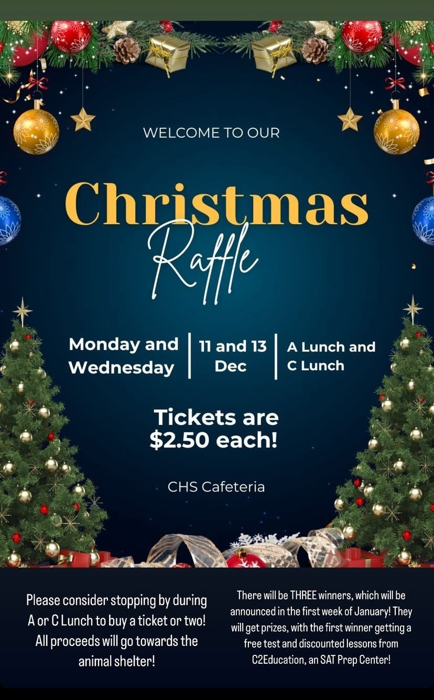
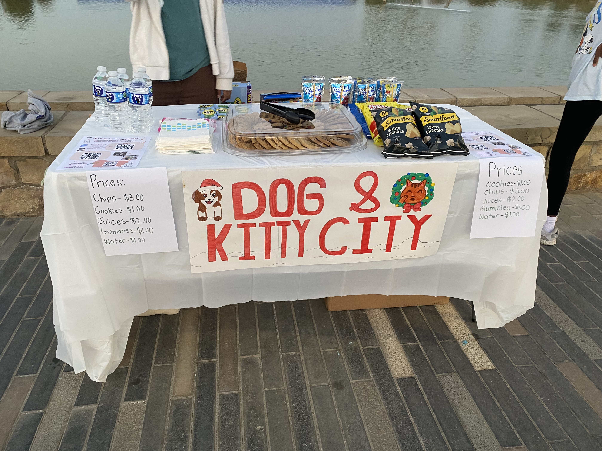
I loved this project sm & i'm fs going to do another one in the future :3!!

 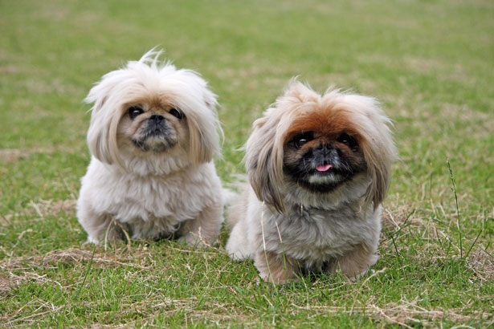
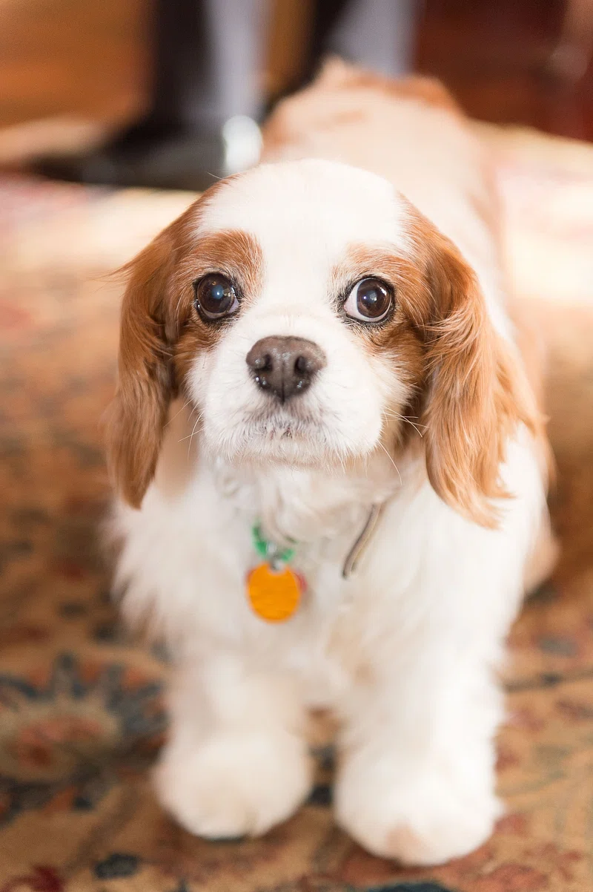
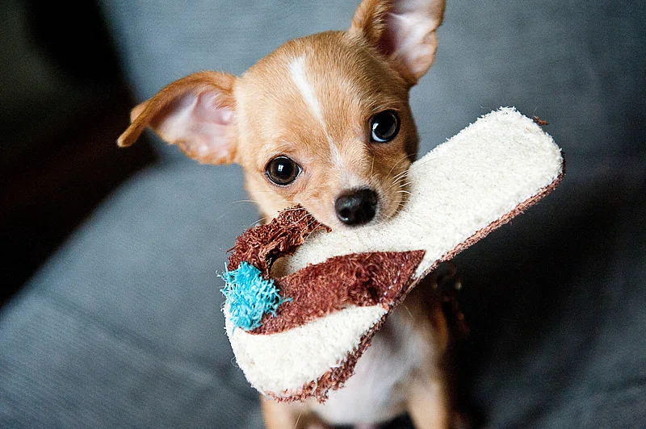
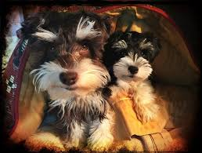
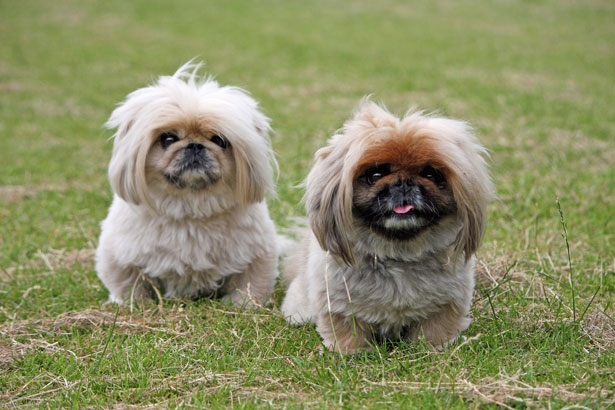
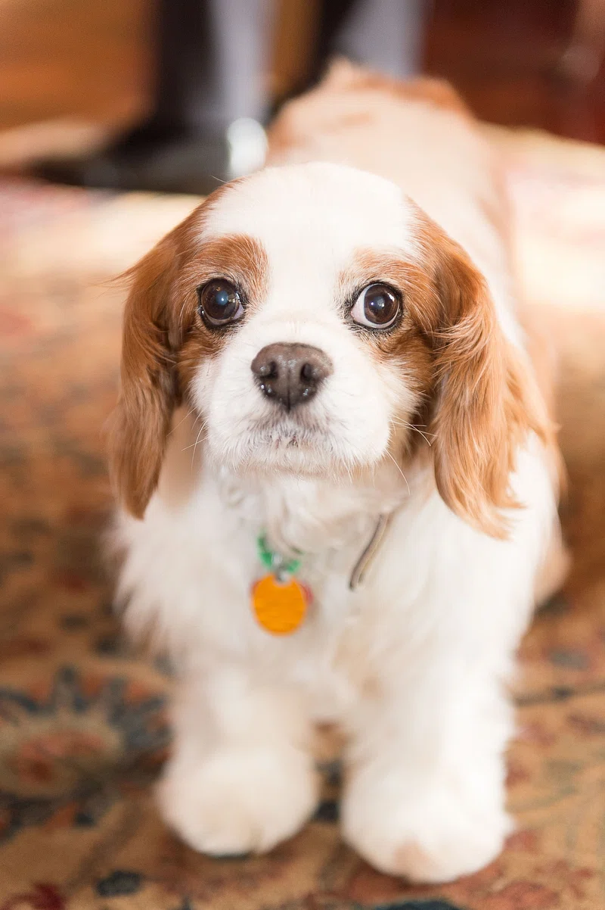
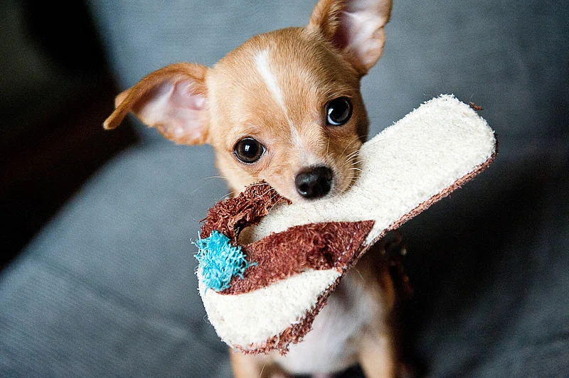
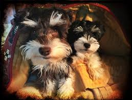
 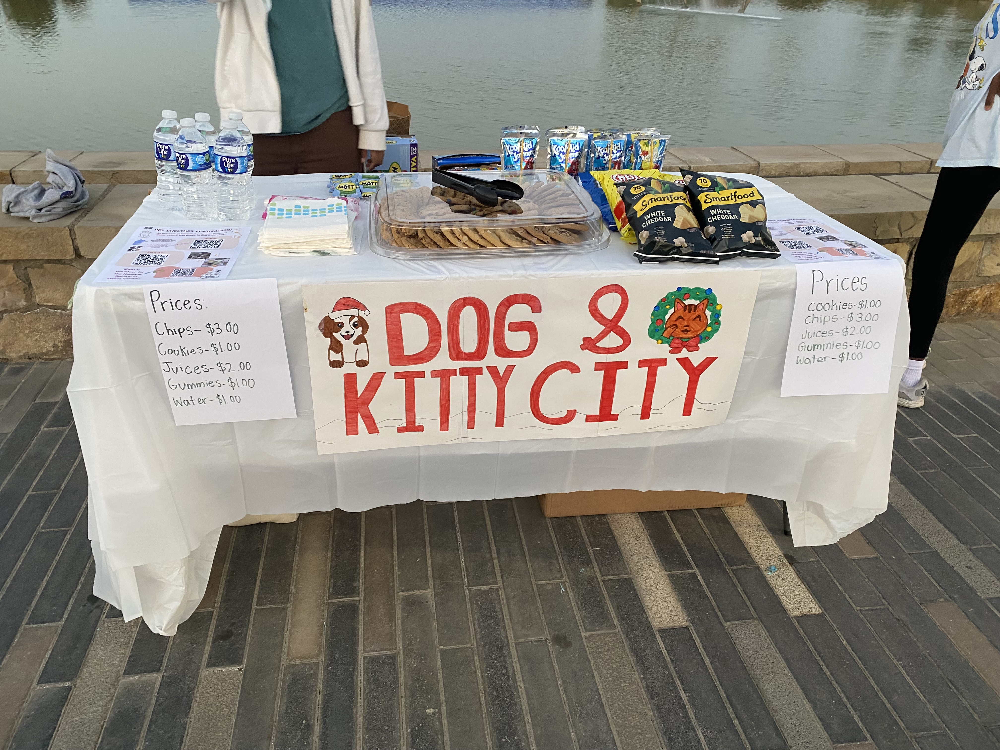
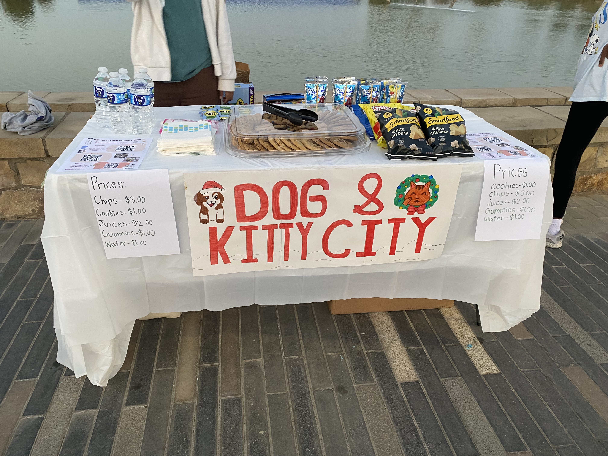